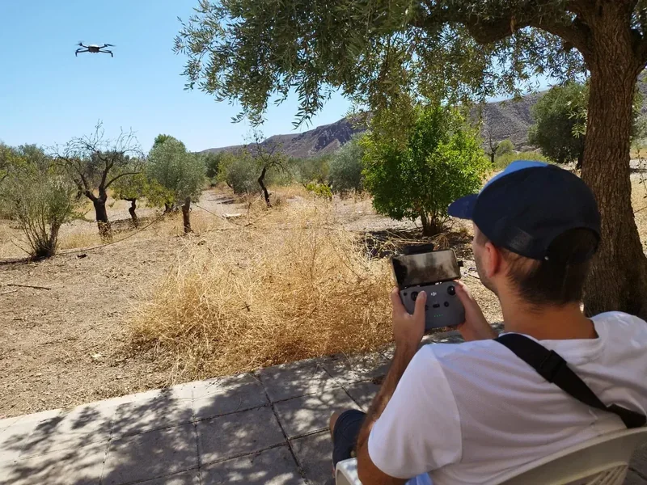

Videoclips y cortometrajes
De la idea al montaje final: planificación del rodaje y postproducción, adaptándome a lo que necesite el artista o el proyecto.
Técnico de sonido y audiovisual

Almería · Videoclips · Streaming · Dron
Producción audiovisual de principio a fin: videoclips, documentales, spots publicitarios, cortometrajes y streaming en directo, con grabación con dron.
De la idea al montaje final: planificación del rodaje y postproducción, adaptándome a lo que necesite el artista o el proyecto.
Investigación del tema, búsqueda de material audiovisual y de localizaciones para grabar, entrevistas, rodaje y montaje de la pieza, desde el planteamiento hasta la edición.
Piezas para marcas y negocios locales: planteamiento de la idea, rodaje del producto y de su entorno, y edición ajustada al formato y la duración que pida cada canal.
Retransmisión del evento en directo, junto a Dos Lúmenes y Lumen Escuela Audiovisual, y edición del evento en postproducción si hace falta.
Grabación aérea de vídeo y fotografía para tus producciones, con edición y retoque de color profesionales.
Piezas de vídeo pensadas para los formatos y la duración de las redes sociales.
He participado en proyectos audiovisuales de todo tipo, asumiendo roles de co-dirección, operación de cámara, edición de vídeo y producción. He colaborado en producciones para Telecinco y Canal Sur.
Trabajo habitualmente con la productora Dos Lúmenes en retransmisiones y producciones, y sigo vinculado a Lumen Escuela Audiovisual, donde me formé.
Soy autónomo y trabajo yo solo en proyectos pequeños. En los grandes me integro en el equipo de otras empresas o reúno a profesionales de confianza. Cómo me organizo, en Cómo trabajo.
Sí, retransmito eventos en directo. Cómo lo hago, en Qué puedo hacer por tu proyecto; y cómo me organizo en eventos grandes, en Cómo trabajo.
Sí, grabo vídeo y fotografía aérea con dron. Las características técnicas (resolución, cámara lenta, formatos), en la lista Dron.
Desde el formulario de contacto, por email o por Instagram.
¿Tienes un proyecto audiovisual en mente?
Contacta conmigo